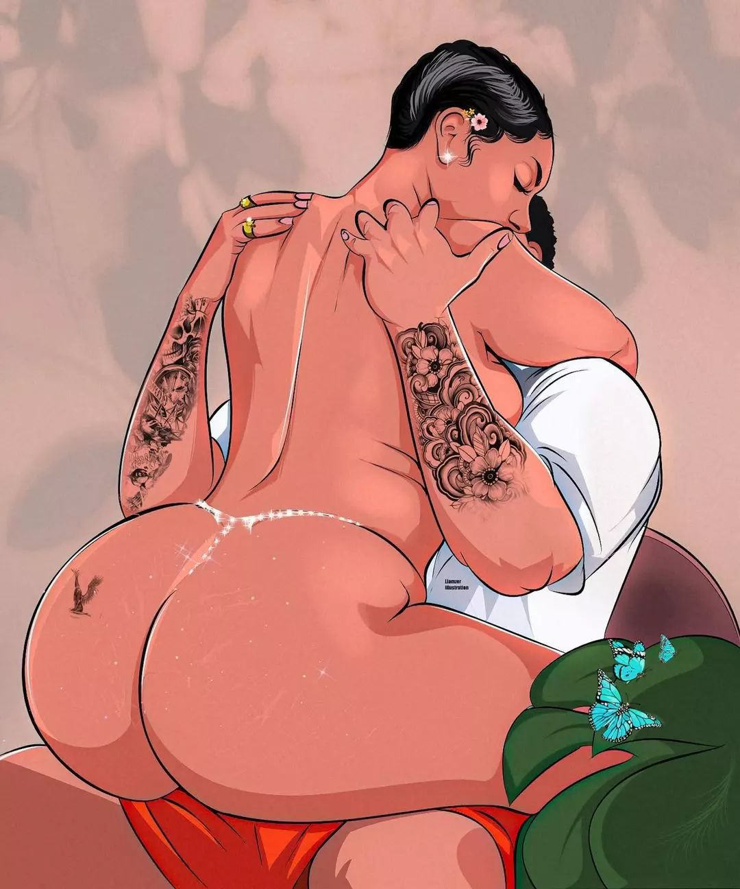

Romance

Poukisa'w pa Kite'm Renmen'w🥺?Poukisa'w pa Banm Chans poum Pwouve'w Santiman'm nan Reyèl🥺?Poukisa Tout Kapris sa yo Malgre'w konnen map Fou Pou wou e Malgre'w Santi ke Tout Sam Vle Se Wou🙇‍♂️?
Poukisa'w Oblije ap Aji konsa pandan'w Konnen se pa Kèlke Jou,Kèlke Semèn,Kèlke Mwa ap Koze Avè'w ki Pral Pwouve'w Tout Bon Vre ke'm Renmen'w e se pa Pwofite mwen Vin Pwofite De Wou🥺?
Poukisa'w Oblije ap Fè Tout Stil sa yo pandan'm diw a Plizyè Repriz ke Se wou Mwen Vle😩Ke'w se Moun Pam nan😌Ke Se Avèw mwen Vle fè Tout Pakou yo😌Ke'm pa Bezwen Lòt Apre'w❣️
Poukisa'w pa Kite'm Pwouve'w Ke'm Sensè ak Onèt🥺?Mwen konnen Pawòl Mwen Yo Trè Fèb men kitem Pwouve'w ke Malgre Grangou,Razè ak Maladi map La🥰Kite'm Baw Epòl Mwen pouw Apiye😌🫰
Mwen pa Yon Pwofitè🥺Mwen pa Vin Brize Kè'w🥺Mwen pa Vin Fè'w Kriye🥺Mwen pa Vin Jwe ak Santiman'w men siw pa Kite'm Pwouve'w sa ou ka pa Janm Kwè'm🥺Poukisaw pa Banm Yon Chans poum Pwouve'w
ke Tout Sam Vle se Wou🥰Ke Tout Sam Renmen se Wou🥰Ke Tout Sam Bezwen se Wou🥰Ke Tout Sam Tap Chache se Wou🥰?
Poukisa'w pa Banm Posibilite poum Moutre'w ke Priyorite'm Se wou e ke Tout Sam Vle se Renmen'w chak Jou Mwen Leve😻Ke Tout Sam Anvi se Fè'w Souri😊Se Fè Kè'w Kontan😊Se Fè'w Viv Tout saw Potko Viv yo😊Se
Fè'w Santi kem se Moun Paw la😌Se Fè'w Santi Ke Lanmou'm pou Wou San Limit😌🤌
Kite'm Pwouve'w Sam Santi yo☺️Kite'm Pwouve'w kem pa Vle Ni 2,ni 3 ou se sèl e Unique mwen Vle🥰Sispann fè Kapris Ouvè Kè'w Kite'm Antre poum vin Baw Lanmou😊Poum vin Konble Vid ou yo😊Poum Vin Met Kouròn
nan Sou Tèt ou👑Met Men'w nan Men'm Poun Reyalize Rèv Nou Yo❣️Poun Reyalize Pwojè nou yo❣️Poun Bati Anpi nou an❣️Poun Konstwi Wayòm nou an donk Sispann fèm Soufri,Sispann Fè Kapris met Tèt ou ak Pam Poun fè Wout la💘🫰
Pafwa mwen Fache😡Mwen Boude☹️Mwen Move menw Rete Sèl moun Mwen Vle😌🤌
Ou Vo plus ke 10mil Lòt se Sak koz m pap Pè Pèdi 10mil Lòt pou wou😌🤌
Pafwa tout Sam pa Vle se wou menw Rete Meyè Chwa mwen Fè🥰🤌
Anpil Vle'm😩Anpil Renmen'm men ou se sèl Moun ki bay Vi'm Sans😌🤌
Pafwa nou Diskite😩Nou Fè Gwo Kont😩Anpil Mo Repere Mo ki pat Dwe Janm Repete men ou Rete Sèl e Unique Moun ki Jwe nan May mwen😌🤌
Pafwa mwen Blese'w😔Pafwa ou Blese'm ak Kèk Mo e Kèk Aksyon men Lanmou'm pou wou pa Janm Sispann Grandi paske ou se Sèl e Unique Alye'm
😌Kolòn mwen e Konplis Mwen😌
Mwen di Anpil😩Son Kourèd mwen ye😩
Si'w Wè mwen Mete'w Okouran de chak Goud ak Dola m Genyen se Paske'm Renmen'w😻
Se paske ou Jwe nan May mwen😻
Se Paske'm Wè Vi'm ak Avni'm Avè'w😻
Se paske se pou wou Sèlman Kè'm Bat😻
M pa Yon Moun ki Sansib ak Sousye😩Mouri ak Maladi Moun pa Regade'm😩
Men Si'w Wè'm Sansib ak Sousye de Wou se paske Ou Inpòtan pou Mwen Anpil❤‍🔥🫰
Se Paske'm pa Wè Vi'm San Wou🥺❤‍🔥🫰
Se paske Ou Vo ak Reprezante Anpil Bagay pou Wou❤‍🔥
Tout Sam Anvi se Renmen😍
Se Damou😻
Se Jwenn Yon Deyès ki Fè'm Krezi🥺
Se Souri😅
Se Viv ak Kè'm kontan😊
Se bay Blag ak Jwe ak Yon Bèl Marabou😉
Se Distrè'm😌
Se pase Kèk Bon Moman💞Kèk moman Inoubliable ak Yon moun mwen Renmen e ki Renmen'm💓🤌
Tout sam Vle se Santi Chalè Kò Yon moun ki Vle'm tout bon vre San Ipokrizi ak fè Sanblan🥺🤌
Tout sa Mwen Anvi se Bo😘Souse Yon Bèl Bouch🥰Santi Dousè Yon Bèl Fanm Kreyòl🥰Se Investi nan Yon Moun kap Investi nan Mwen😌
Tout Sam Vle se Sousye, Sansib,Bay Valè ak Inpòtans ak Yon moun kap fè menm Bagay la pou Mwen e kap konn Vrè Vale'm🤌
Mwen Anvi Viv😩Mwen Anvi Tonbe Damou😩Mwen Anvi Pwofite chak Instan😩Chak Segond ak Yon moun kap fèm Santi'm
Estrayòdinè malgre Mwen Plen Mès ak Defo🙌
Mwen vle Santi'm Unique ak Spécial malgre Mwen Pa Pafè😌

Salut Bèl Ti Piti🥰🙋‍♂️
Mwen pa Konnen'w ni tou Mwen pa konn Kote'w Soti menm gentan Santi Manvi
konn Plus de Wou depi lèm wè wap Vini an😌Sou Plas ou fè Inpak sou Mwen🥰
Manvi Konn Kijanw Rele🥰Kote'w Soti🥰Pa Dim Soumoun men manvi konn tout Bagay
de Wou tankou Manje Prefere'w😌Koulè Prefere'w😌Saw Renmen e saw Rayi😌Manvi
Konn Pasyonw yo sa tap fèm Plezi anpil Siw Banm Chans poum fè Pati de Pasyon'w
yo😌💘Manvi Akonpanye'w paske Yon Bèl Moun Tankou'w Mwen pa Anvi ou Mache Sèl🥰🤌
Mwen pap Kouri di Mwen Renmen'w😍Mwen pap Kouri di Mwen paka Viv San Wou menm Annip
Wè'w Batman Kè'm gentan Akselere🥺Mwen Annip Wè'w Mwen Gentan Santi'm Timid😩Mwen Gentan
Santi'm Pèdi Mo'm Yo😩M Gentan Santi map Swe mwen pa konn si se Lanmou ou si son Kout Foud
menm gentan Santi mwen Santi Yon Bagay Nouvo pou Wou😊Mwen Gentan Santi ou Kòmanse Vibre Kè'm
Serye💓Mwen gentan Santi ou se Pi Bèl Rankont Mwen te ka Fè😌❤️
Ou ka Wè Mwen pa Sispann Gade'w😉Ou ka Wè Mwen pa Sispann Souri se jus ke Mwen Santi se Reve map
Reve paskem pat Janm panse ak Kwè sim tap Janm Kwaze ak Yon Bèl Kreyati Tankou'w🥰Si se Reve map
Reve map fèw Konnen mwen pa Anvi Reveye paskew son Moniman😌Yon Art donk Mwen Anvi pase tout Vi'm ap
Admire'w🥰💓
Pafwa Mwen Anvi Ekri'w poum diw Janw Konte pou Mwen ak Jan'm Wè Vi'm Avè'w😌💓
Poum diw Jan ou Jwe nan May Mwen An Sekrè🥺
Jan Mwen Renmen'w😍
Jan Mwen Anvi Posede'w🥰
Jan Vire Tounen map Swiv ou,map veye statut'w,map admire Foto'w ak Ti Vidéo w yo an Sekrè men map
mande eske wap Konprann Mwen🥺Eske wap Kwè'm🥺Eske wap bay Sam Santi pou wou an Inpòtans🥺💓
Pafwa Mwen Anvi Rele'w poum diw Mwen pa gen anyen poum diw Se Vwa'w Mwen jus Anvi Tande🥺💓
Pafwa Mwen Anvi Ekri'w poum diw Mwen pa Jwenn Mo poum diw Tèlman Ou Fè'm Vibre jus Mesaj ou Mwen Anvi Li🥺💓
Pafwa Mwen Tèlman Anvi Li Mesaj ou😫Mwen tèlman Anvi tande Vwa'w😫Gade'w kap Souri😅Baw Ti blag😌Fè Ti Jwe Avè'w😉
Fè Kè'w Kontan men map mande eske wap wè se Renmen mwen Renmen'w🥺❤️
Non Mwen pa Pafè Mwen konn sa😊Mwen konsyan de sa men ou se tout Sam Vle🥰Tout Sam Anvi Genyen🥰Tout Sam Renmen jus
Kite'm Pwouve'w Sam Santi yo😌💓
Mwen Konprann ou ka pa kwè'm🥺Ou ka Panse se Jwe map Vin Jwe ak Kè'w e Santiman'w🥺Se Pwofite'm Bezwen Pwofite de Wou men siw
banm Yon Chans poum Pwouve'w sa'w Fèm Santi yo Mwen pa Kwè ou ap Regrèt😌Mwen tap Pran Chak Segond nan Chans sa poum Pwouve'w mwen Sensè
e Lanmou'm gen pou wou a Vrè ak Reyèl😍💓
{kind=link}
{kind=link}
{kind=link}